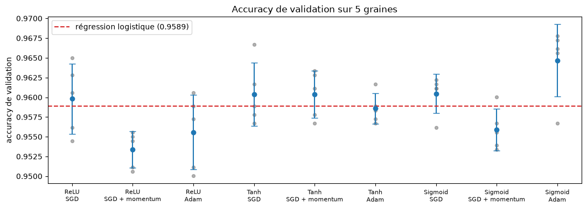
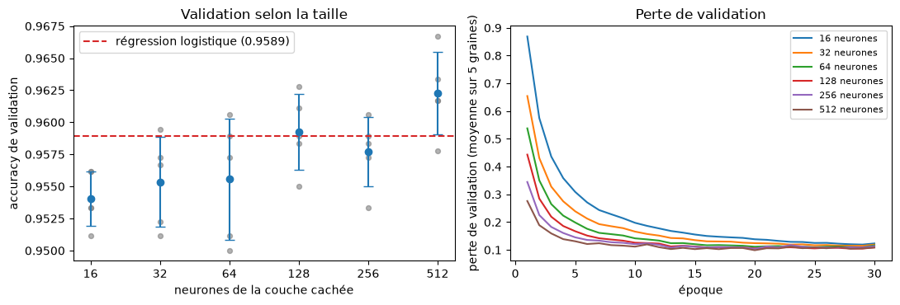
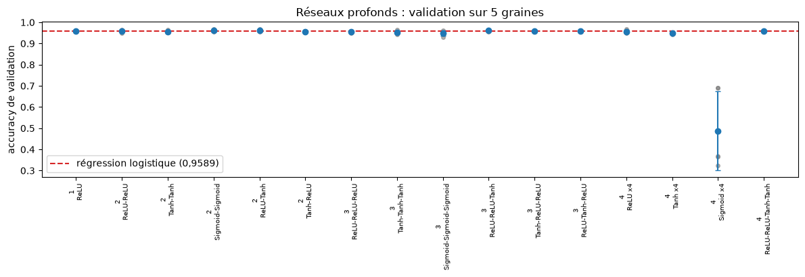
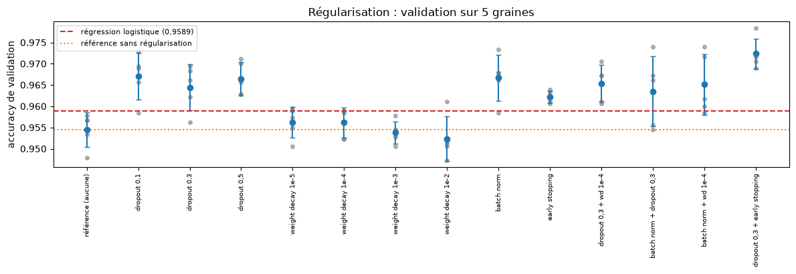
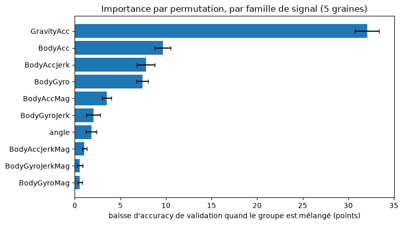
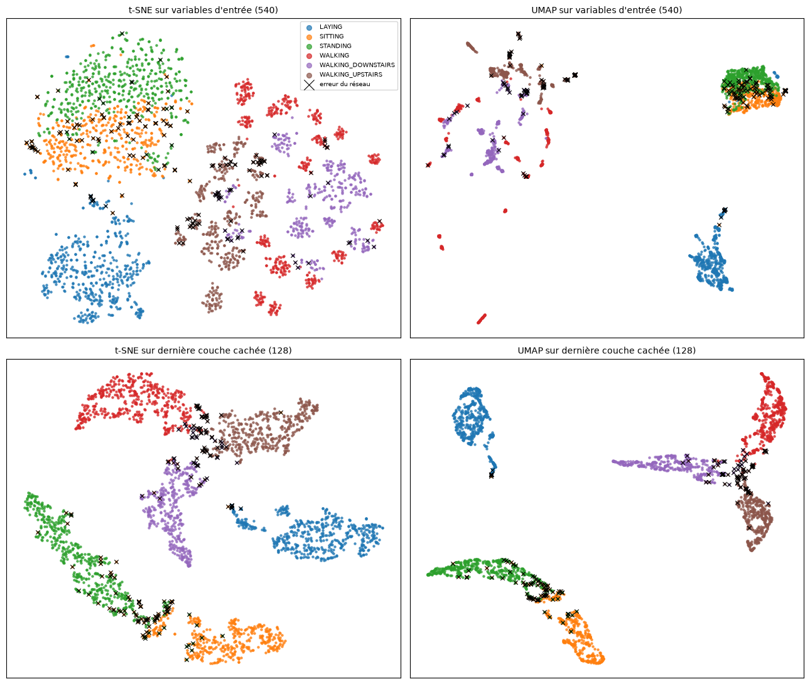
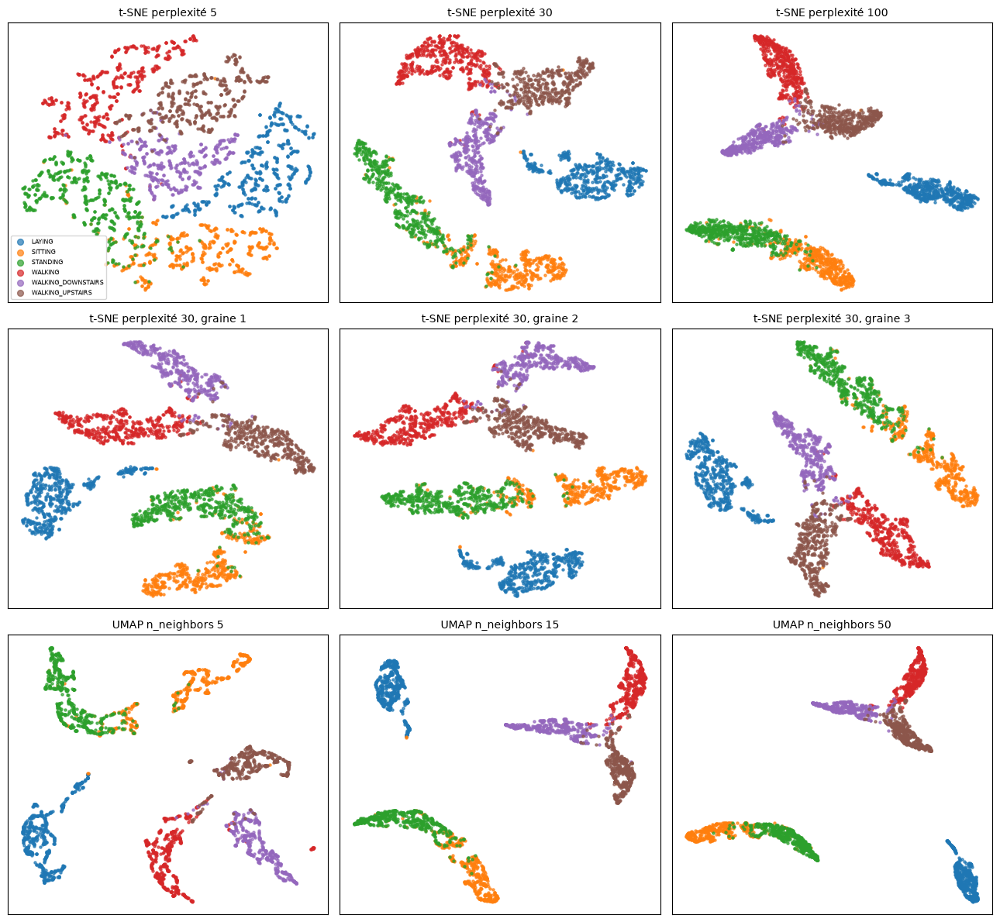

Annexes au rapport (hors des 6 pages) — Martine Ouedraogo
Figures complémentaires issues des notebooks exécutés (1_une_couche_cachee.ipynb et 2_reseau_profond.ipynb), reproduites telles quelles.

Figure A1. Une couche cachée, 9 combinaisons activation × optimiseur : accuracy de validation sur 5 graines (points = graines, bleu = moyenne ± écart-type, trait rouge = régression logistique). Presque toutes les barres d'erreur se chevauchent.

Figure A2. Taille de la couche cachée (16 à 512 neurones) : accuracy de validation (gauche) et perte de validation moyenne au fil des époques (droite).

Figure A3. Réseaux profonds (1 à 4 couches, 16 configurations d'activations), accuracy de validation sur 5 graines. Seul Sigmoid à 4 couches s'effondre.

Figure A4. Régularisation (14 configurations) : accuracy de validation sur 5 graines ; ligne rouge = régression logistique, pointillé orange = réseau sans régularisation.

Figure A5. Importance par permutation par famille de signal (baisse d'accuracy de validation, 5 graines).

Figure A6. t-SNE (perplexité 30) et UMAP (n_neighbors 15, min_dist 0,1) du test, variables d'entrée (haut) et dernière couche cachée (bas) ; croix = erreurs du réseau.

Figure A7. Sensibilité des projections de la dernière couche cachée à la perplexité (5, 30, 100), à la graine (t-SNE) et à n_neighbors (UMAP : 5, 15, 50). Les groupes se retrouvent, mais leur position et leur distance changent.